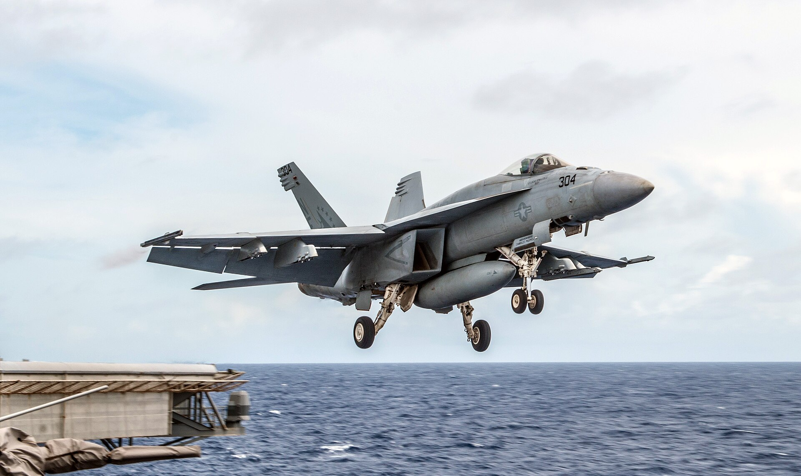

Vol. I · No. 41 · Sunday Special · The week ending June 28, 2026 · ~16 min read
The week the AI boom met the public markets' cold feet, a Gulf ceasefire slid into open fire, and a Caribbean coast began counting its dead in the thousands.
The Splash · The World · Strait of Hormuz · cross-spectrum LLCR
The Hormuz ceasefire collapses into open fire as the U.S. and Iran trade strikes

A U.S. Navy F/A-18E Super Hornet launches from a carrier flight deck; American jets struck Iranian targets near the Strait of Hormuz this weekend. — U.S. Navy / Wikimedia Commons
U.S. warplanes struck about ten Iranian military targets in and around the Strait of HormuzPlaceThe ~21-mile-wide chokepoint between Iran and Oman through which roughly a fifth of the world's seaborne oil moves. Iran's leverage over it is the central dispute of the 2026 crisis. late Friday, June 26, U.S. Central CommandInstitutionCENTCOM, the U.S. combatant command responsible for the Middle East. It announced and attributed the weekend's strikes on Iranian military sites. said, after an Iranian drone hit the Singapore-flagged cargo ship Ever Lovely as it exited the strait along a U.S.-cleared route near Oman. Hours later Iran's Islamic Revolutionary Guard CorpsInstitutionThe IRGC, Iran's elite parallel military answering to the Supreme Leader, which controls the naval forces operating in the Gulf and claimed the retaliatory strikes on Kuwait and Bahrain. said it had struck back, claiming it "destroyed eight important U.S. military facilities" at the Ali al-Salem base in Kuwait and the Fifth Fleet's home port in Bahrain; Kuwait and Bahrain condemned the "heinous" attacks.
The exchange is the first live test of the framework both sides signed barely a week ago, and it turns on the same question that has run all month: who controls the strait. Iran insists vessels hug a corridor near its own coast; the U.S. Navy's Joint Maritime Information CenterInstitutionA U.S. Navy-overseen body in Bahrain that issues guidance to commercial shipping in the Gulf. On June 27 it widened a competing Hormuz route near Oman to two-way traffic. on June 27 widened a competing route near Oman to two-way traffic, a direct challenge to Tehran's claim of authority over the waterway. By Sunday, Iran called the American attack a "clear violation" of the June 18 ceasefire memorandumConceptThe 14-point U.S.-Iran memorandum of understanding that paused the 2026 war and set a 60-day road map plus a Hormuz transit mechanism. This weekend's strikes are its first armed breach. and threatened a "complete halt" to talks.
Markets had treated that memorandum as a genuine de-escalation; crude slid when it was signed. The weekend's strikes reopen the question of whether the corridor stays open, and at what insured cost, for the tankers and box ships that thread Hormuz every day, just as a 60-day diplomatic clock was supposed to be running down toward a lasting deal.
"A foolish violation of our Ceasefire Agreement."
— President Trump, on the Ever Lovely attack, June 26
The Front · Markets & Deals
OpenAI tilts its IPO to 2027, and lets Anthropic go first
OpenAI is leaning toward holding its initial public offering until 2027, people familiar with the deliberations told Bloomberg, backing off a fall-2026 listing and expecting its rival AnthropicInstitutionThe AI lab behind Claude, founded by former OpenAI researchers. It filed a confidential draft registration on June 1 and is targeting an October Nasdaq debut near a $965 billion valuation. to reach the public markets first, perhaps as soon as October. Both have filed confidentially with the SEC; OpenAI still wants a figure near $1 trillion and, the reporting says, will not list for less.
The signal rattled the banks set to underwrite the two largest tech offerings in a generation. Goldman Sachs and Morgan Stanley, which OpenAI has tapped to advise it, fell 4.8% and 4.1% as the report helped drive Friday's tech selloff. SpaceX's punishing post-listing slideConceptSpaceX shed roughly $600 billion in three sessions after its June debut, a cautionary comp now cited by bankers worried about how public investors would absorb another marquee AI name., sources said, has sharpened the worry about another marquee AI name hitting public markets.
The Front · AI
Washington starts gating frontier AI, model by model
The White House asked OpenAI to hold its next model, GPT-5.6ConceptOpenAI's next frontier model. The administration asked the company to release it only to government-approved customers, the first U.S. move to gate a leading model before its public launch., to government-approved customers and to clear access "customer by customer," Axios reported, the first time the U.S. has moved to gate a frontier model before public release. Sam Altman, who discussed the request with Commerce Secretary Howard LutnickPersonU.S. Commerce Secretary, whose department is emerging as the chokepoint for frontier-model export and release decisions. He cleared Anthropic's re-release days after the OpenAI request., called it "not our preferred long-term model," but agreed.
Days later the same machinery ran in reverse: Commerce cleared Anthropic to re-release its most capable model, Claude Mythos 5ConceptAnthropic's top-tier model, returned to roughly 100 vetted firms and agencies two weeks after a government blackout, with its most advanced configuration still blocked., to roughly 100 vetted firms and agencies, two weeks after a blackout, while keeping its most advanced tier blocked. Together the moves sketch a regime in which the government, not the lab, decides who may touch the frontier.
The Front · The World · La Guaira · cross-spectrum LCR
Venezuela's twin quakes kill more than 1,400 as the search turns desperate
The toll from the back-to-back earthquakes that struck Venezuela's coast Wednesday evening, a magnitude 7.2 followed seconds later by a 7.5, passed 1,400 by Sunday, with more than 3,200 injured and nearly 69,000 reported missing. The doubletConceptTwo large earthquakes striking the same area within seconds. Venezuela's was its strongest seismic event since 1900 and flattened more than 1,400 buildings in coastal La Guaira., the country's strongest since 1900, flattened more than 1,400 buildings in La GuairaPlaceThe coastal city north of Caracas hit hardest by the quakes. It hosts Simón Bolívar International Airport, the capital's main air link, which was heavily damaged. and heavily damaged the capital's main airport.
Roughly 30 international search teams and 30,000 mobilized Venezuelans are working the rubble against aftershocks and a shortage of heavy machinery, the U.N. said. The Trump administration has pledged $150 million and deployed Navy warships; the U.S. Geological SurveyInstitutionThe federal science agency whose PAGER casualty model estimates quake impact. Its projection still warns Venezuela's toll could rise into the tens of thousands. casualty model still warns the toll could climb into the tens of thousands.
The Front · Law & the Courts
The Court ends its term with a corporate shield and a run of wins for the government
In the marquee business ruling of a blockbuster final week, the Supreme Court held 7-2 in Monsanto v. Durnell that the federal pesticide statute, FIFRAConceptThe Federal Insecticide, Fungicide, and Rodenticide Act. The Court read it to bar state failure-to-warn claims whose labeling demands differ from the EPA-approved label., preemptsConceptFederal preemption: where Congress so provides, federal law displaces conflicting state law. Here it wipes out state-court Roundup warning claims, ending tens of thousands of suits. state failure-to-warn suits over Roundup, shielding BayerInstitutionThe German pharma-and-chemicals group that owns Monsanto. It had floated roughly $7.25 billion to settle Roundup cancer litigation; the ruling vindicates that posture. from a wave of cancer claims and validating the roughly $7.25 billion it had floated to settle them. The split crossed the usual lines: Kavanaugh wrote for a majority including Sotomayor and Kagan, while Gorsuch joined Jackson in dissent.
It capped a stretch that ran heavily the government's way. The Court expanded gun rights in Wolford v. Lopez, struck Hawaii's default ban on firearms on private property, and handed the administration back-to-back immigration wins, clearing the end of Temporary Protected StatusConceptTPS shields nationals of designated countries from removal. The Court let the administration end it for Haiti and Syria and treated the decision as effectively unreviewable. for Haiti and Syria and blessing border "metering." A rare open clash between Alito and Sotomayor, which the Court later walked back as resting on "a misunderstanding," became the term's odd coda.
The Front · Entertainment & EASL
Grand Theft Auto VI lands at $80, and the industry exhales
RockstarInstitutionRockstar Games, the Take-Two studio behind Grand Theft Auto. GTA VI is the most anticipated release in the medium, with implications for industry-wide pricing. priced Grand Theft Auto VI at $79.99 for the standard edition and $99.99 for an Ultimate tier, confirmed a November 19 launch on PlayStation 5 and Xbox, and opened pre-orders June 25. The number matters because the industry had braced for a $100 flagship: holding the line at $80, the most anticipated title in gaming defused the AAAConceptIndustry shorthand for the biggest-budget games. A $100 AAA price had been feared as the new ceiling; GTA VI's $80 resets that expectation downward. price-ceiling fear without conceding the premium.
Wall Street read it as a green light. Bank of America's Omar Dessouky, who had urged Rockstar to set the bar at $80 so rivals could follow, lifted his Take-TwoInstitutionTake-Two Interactive, Rockstar's parent and the publicly traded vehicle for GTA. Analysts raised price targets on the $80 reveal even as the stock dipped. price target to $368 from $320, with BMO and TD Cowen reiterating buys. Rockstar also confirmed the launch is single-player only, with the online mode sold separately later, a sequencing choice with real revenue implications.
Across the sectors
The week's best, by beat, drawn from the seven dailies that cleared the bar.
Artificial Intelligence
Anthropic accuses Alibaba of its largest model raid.Anthropic told U.S. senators that Alibaba-affiliated operators ran "the largest known distillation attack" on Claude to date, roughly 25,000 fake accounts and 28.8 million exchanges from April to June, as the lab moved toward its confidential IPO.· CNBC
OpenAI tapes out its first chip.OpenAI and Broadcom unveiled "Jalapeno," a reticle-sized inference processor designed to tape out in about nine months and aimed squarely at Nvidia's economics, with deployment slated for late 2026.· CNBC
The AI spend reckons with budgets.Enterprises are shifting from "tokenmaxxing" to efficiency, CNBC reported, with some customers slashing model bills or switching providers, a turn that could slow the revenue growth OpenAI and Anthropic are carrying into their IPO filings.· CNBC
Markets & Deals
The memory crunch cuts both ways.An AI-driven DRAM shortage pushed Apple to raise Mac and iPad prices more than 20% and Microsoft to hike the Xbox, sending Apple to its worst day in over a year, even as Micron posted a blowout quarter ($41.5B revenue, high-bandwidth memory sold out through 2027) on the same shortage.· Bloomberg
onsemi strikes its biggest-ever deal.onsemi agreed to buy Synaptics for about $7 billion in all-stock, its largest acquisition, a bet on "physical" and edge AI, with closing targeted for mid-2027.· SEC / Synaptics
Merck KGaA reaches for Bio-Techne.Germany's Merck KGaA agreed to acquire Nasdaq-listed Bio-Techne for $73 a share, about $11.3 billion, its biggest deal since Sigma-Aldrich, deepening the life-science "picks-and-shovels" trade.· Merck KGaA
Alphabet joins the Dow.S&P DJI swapped Alphabet in for Verizon in the Dow Jones Industrial Average effective June 29, the index's first change since 2024 and another tilt of the price-weighted benchmark toward Big Tech.· CNBC
Law & the Courts
A government sweep on immigration.The Court cleared the administration to end Temporary Protected Status for Haiti and Syria, effectively unreviewable, and upheld border "metering," ruling a migrant on the Mexican side has not "arrived" until setting foot on U.S. soil.· SCOTUSblog
A Bruen sequel on guns.In Wolford v. Lopez the Court struck down Hawaii's rule barring guns by default on private property open to the public, extending its text-history-tradition method to consent-default regimes.· SCOTUSblog
A bench clash, then a walk-back.Justice Alito's rare same-day retort to a Sotomayor dissent drew an even rarer Court statement that it rested on "a misunderstanding," since her chambers had in fact notified him in advance.· NPR
The World
Israel and Lebanon sign; Hezbollah refuses.A U.S.-brokered framework signed June 26 ties any Israeli pullback to verified Hezbollah disarmament; Hezbollah's Naim Qassem called it "null and void" and "a surrender," and supporters blocked the road to Beirut's airport.· Al Jazeera
Ukraine's largest drone barrage.Ukraine sent 660-plus drones across twelve regions and Crimea overnight into June 26, among the war's largest single waves, striking the Kerch naval area as Zelensky ordered a 40-day influence operation.· NPR
A record heat dome over Europe.Western Europe baked under all-time June highs, the Netherlands hitting 39.4°C and France reporting some 50 heat-related deaths, as the World Meteorological Organization logged falling records.· CNN
Culture & EASL
DC's first flop under Gunn."Supergirl" opened to about $40 million, well below its $47-50M tracking and less than a third of last year's "Superman" debut, the first box-office stumble of the rebooted DC slate.· Variety
Sony guts the Destiny team.Sony cut at least 292 jobs at Bungie, eliminating most of the Destiny team and the studio's cinematic group, as Microsoft braced its own Xbox studios for fiscal-year-end closures.· Sony Interactive
Private capital buys into the NBA.The Cavaliers neared the sale of a minority stake to Blue Owl Capital at a $5.5 billion valuation, the latest institutional money to flow into team ownership.· Sportico
South Florida · Wall Street South
Carnival's record quarter, guarded outlook.Miami's Carnival posted record Q2 revenue of $6.7 billion and an all-time-high customer-deposit balance, then fell about 6% after trimming full-year net-yield guidance, blaming a Middle East drag on European bookings.· Carnival 8-K (SEC EDGAR)
The Heat draft a pick they can't keep.Miami selected Tennessee forward Nate Ament at No. 13 and immediately routed his rights to Milwaukee, a pass-through required by the Giannis Antetokounmpo trade terms; the Heat kept their own No. 41.· NBA.com
The week in review
Seven days ending Sunday, June 28, 2026.
Mon, Jun 22
Markets churn: SpaceX sheds about $600 billion in three sessions and floats its first bond, as the Russell 2000 closes above 3,000 for the first time.
Tue, Jun 23
Seoul's Kospi craters nearly 10% in an AI-chip rout; Keir Starmer resigns as UK prime minister; the Court curbs human-rights suits in Cisco v. Doe.
Wed, Jun 24
Alan Greenspan, the "Maestro" of the modern Fed, dies at 100; Anthropic recasts Claude as a persistent Slack teammate.
Thu, Jun 25
Anthropic accuses Alibaba of its largest model raid; the Court shields Monsanto and expands gun rights; Rockstar prices Grand Theft Auto VI at $80.
Fri, Jun 26
Washington moves to gate GPT-5.6; Apple logs its worst day in a year on the memory crunch; twin earthquakes devastate Venezuela; Israel and Lebanon sign a framework.
Sat, Jun 27
U.S. warplanes strike Iran as the Hormuz ceasefire frays; OpenAI tilts its IPO toward 2027.
Sun, Jun 28
Iran strikes U.S. bases in Kuwait and Bahrain as the shooting war widens; Venezuela's toll passes 1,400; "Supergirl" opens to a soft $40 million.
Compiled by Matthew Yellin · mattyellin.com · Est. May 2026 · The Sunday edition gathers the week across every sector; the weekday paper returns Monday.